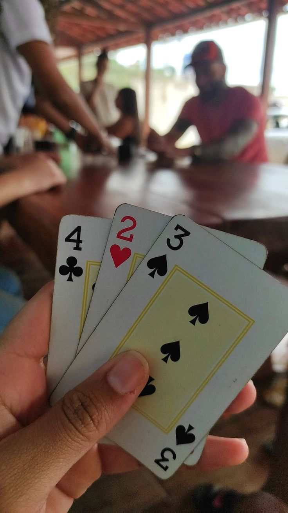

Afinal, como se joga o Truco Mineiro?
Como joga o Truco Mineiro
O Truco Mineiro deve-se jogar individual, em duplas/pares ou trios (no caso de duplas ou trios, os jogadores devem alternar suas posições na mesa entre os parceiros e adversários). Quem faz doze pontos [tentos] primeiro vence. O jogador/dupla/trio ganha a queda quando vence dois jogos.Os participantes recebem três cartas a cada mão/rodada e disputam uma melhor de três. Uma carta é colocada na mesa por rodada, e a mais valiosa vence a vez. Ao ganhar duas rodadas, o jogador/dupla/trio recebe os pontos da mão.Em caso de empate na primeira rodada, a segunda decide o vencedor da mão. Em caso de empate na segunda ou terceira rodada, ganha quem venceu a primeira.Em raros casos de empate em todas as rodadas, ninguém ganha os pontos da mão.
Cartas do Truco Mineiro
O truco mineiro é jogado com 40 cartas, retirando os coringas, 8, 9 e 10. A sequência das cartas, independente do naipe, na ordem de mais valiosa para menos valiosa, 4 Manilhas são as cartas com maior valor no Truco. No Truco Mineiro, as manilhas são fixas.O zap, 4 de paus, é a carta mais forte do Truco. Da mais valiosa para a menos valiosa, as manilhas no truco mineiro são: 4 de paus (Zap) > 7 de copas > A de espadas (Espadilha) > 7 de ouros.
- 4 de paus ♣️ – a carta mais poderosa do jogo.
- 7 de copas ♥️ – a segunda mais forte.
- Ás de espadas ♠️ – a terceira na hierarquia.
- 7 de ouros ♦️ – a quarta carta mais forte.
- 3 (♣️, ♥️, ♠️, ♦️)
- 2 (♣️, ♥️, ♠️, ♦️)
- A (♣️, ♥️, ♦️)
- K (♣️, ♥️, ♠️, ♦️)
- Q (♣️, ♥️, ♠️, ♦️)
- J (♣️, ♥️, ♠️, ♦️)
- 7 (♣️, ♠️,)
- 6 (♣️, ♥️, ♠️, ♦️)
- 5 (♣️, ♥️, ♠️, ♦️)
- 4 (♥️, ♠️, ♦️)
Mão de Dez
É quando uma das duplas atinge 10 pontos. Nesta mão, os jogadores da dupla/trio com 10 pontos olham as cartas um do outro antes de jogar, decidindo se vão jogar ou não a mão.Se jogarem, a mão vale quatro pontos. Se rejeitam, seus adversários ganham dois pontos.
Mão de Ferro
Em caso de empate em 10 a 10, as duas duplas disputam a mão às cegas. As cartas permanecem viradas de cabeça para baixo, ninguém pode ver suas próprias cartas.Quem vencer a mão, ganha o jogo.
Qual a diferença de truco mineiro e paulista?
O truco mineiro destaca-se pela estratégia sutil, priorizando blefes calculados. Já o truco paulista é marcado pela ousadia, com jogadas intensas e decisões rápidas. Enquanto o mineiro valoriza a astúcia, o paulista abraça a adrenalina, revelando nuances cativantes do tradicional jogo de cartas brasileiro.